19. Job Templates
A job template is a definition and set of parameters for running an Ansible job. Job templates are useful to execute the same job many times. Job templates also encourage the reuse of Ansible playbook content and collaboration between teams.
Open Automation Execution > Templates. The Automation Templates list shows the job templates and workflow job templates you can see, with their type, labels, organization and when they last ran. Expand a row with the arrow next to it to see more details. The list is sorted by name, but you can sort by other criteria, or search by various fields and attributes of a template.
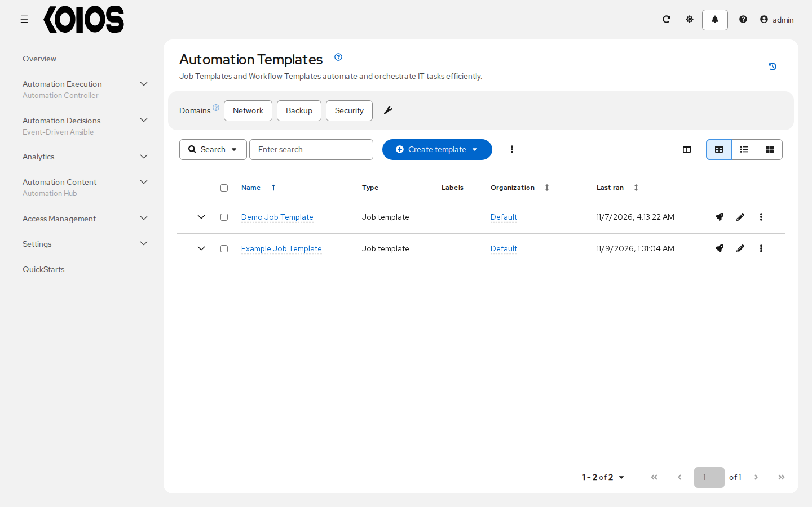
Each row has Launch template (rocket icon), Edit template (pencil icon) and, in its menu, Duplicate template and Delete template. To delete several templates, select them and click Delete templates in the toolbar menu. Before deleting a job template, be sure it is not used in a workflow job template.
Note
When you delete items, a confirmation window lists them and asks you to confirm the deletion; it does not list the other items that use them. Templates that used a deleted item keep existing without it: a job template without project cannot be launched until you select another one; without inventory, it needs another one, selected in the template or, if the template prompts for it, at launch; a deleted credential is simply removed from the templates, which run without it. Below is an example of the confirmation window:
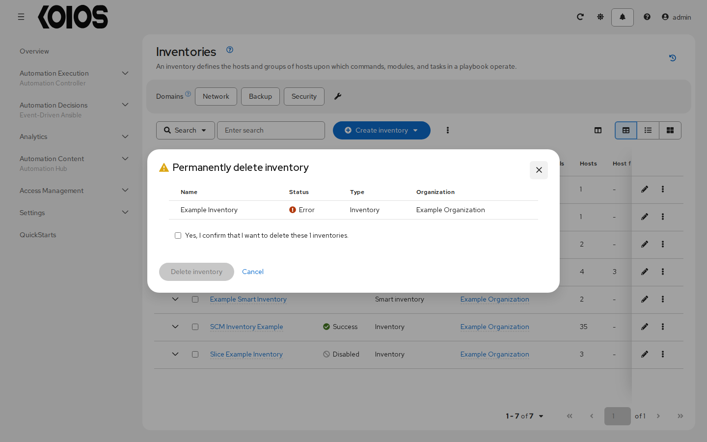
Note
Job templates can be used to build a workflow template. Workflow job templates have View workflow visualizer in their row menu, to build the workflow graphically. Many parameters in a job template allow you to enable Prompt on launch that can be modified at the workflow level, and do not affect the values assigned at the job template level. For instructions, see the Workflow Visualizer section.
19.1. Create a Job Template
To create a new job template:
In the Templates list, click Create template and select Create job template.
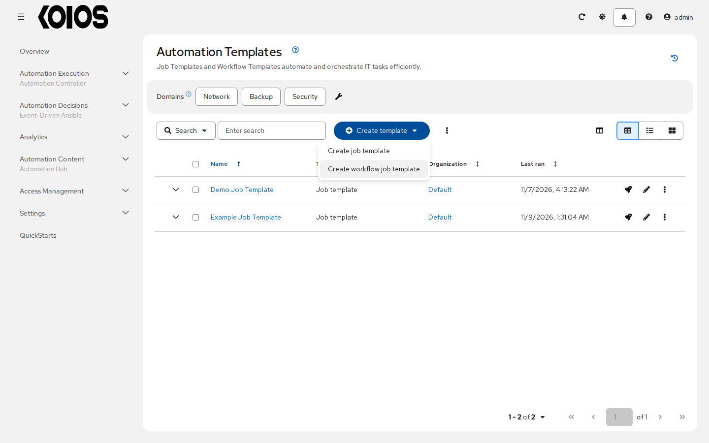
Enter the appropriate details into the following fields:
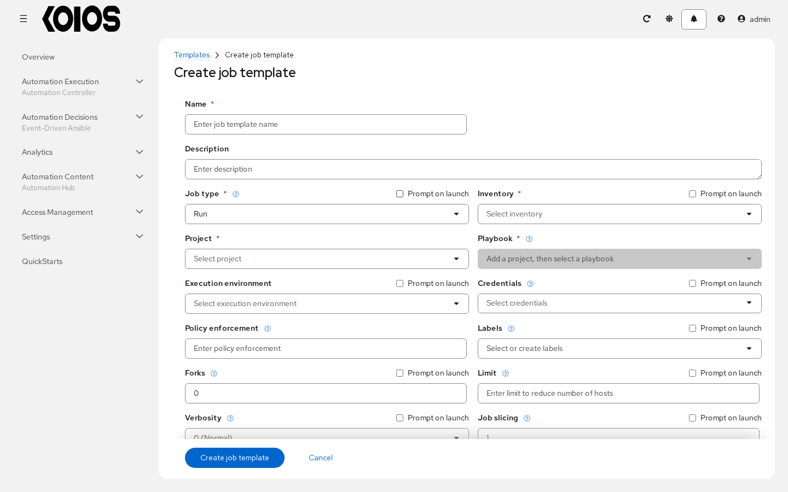
Note
If a field has the Prompt on launch checkbox selected, launching the job will prompt you for the value for that field upon launch. Most prompted values will override any values set in the job template; exceptions are noted below.
Field |
Options |
Prompt on launch |
|---|---|---|
Name |
Enter a name for the job template (required). |
N/A |
Description |
Enter an arbitrary description as appropriate (optional). |
N/A |
Job type |
More information on job types can be found in the Playbook execution section of the Ansible documentation. |
Yes |
Inventory |
Choose the inventory to be used with this job template from the inventories available to the currently logged in user. You need the Use role on an inventory to use it in a job template. It is required unless it is prompted on launch. |
Yes. Prompts appear in the Prompts step of the launch wizard. |
Project |
Choose the project to be used with this job template from the projects available to the currently logged in user (required). |
N/A |
Source control branch |
This field is only present if you chose a project that allows branch override. Specify the overriding branch to use in your job run. If left blank, the specified branch (or commit hash or tag) from the project is used. For more detail, see job branch overriding. |
Yes |
Playbook |
Choose the playbook to be launched with this job template from the playbooks found in the selected project (required). It is available once a project is selected. |
N/A |
Execution environment |
Select the container image to be used to run this job. If left blank, the execution environment of the project, the organization or the default one is used. |
Yes |
Credentials |
Choose the credentials to be used with this job template. You can select one credential of each type, except Vault credentials with different Vault IDs. |
Job Template default credentials must be replaced
with one of the same type. Please select a credential
for the following types in order to proceed: Machine.
|
Policy enforcement |
A policy to evaluate before the jobs of this template run, when policy enforcement is configured (optional). |
N/A |
Labels |
|
|
Forks |
The number of parallel or simultaneous processes to use while executing the playbook. A value of zero uses the Ansible default setting, which is 5 parallel processes unless overridden in the |
Yes |
Limit |
A host pattern to further constrain the list of hosts managed or affected by the playbook. Multiple patterns can be separated by colons ( |
Yes |
Verbosity |
Control the level of output Ansible produces as the playbook executes. Choose the verbosity from Normal to various Verbose or Debug settings. Verbose logging includes the output of all commands. Debug logging is exceedingly verbose and includes information on SSH operations that can be useful in certain support instances. Most users do not need to see debug mode output. Warning Verbosity 5 causes automation controller to block heavily when jobs are running, which could delay reporting that the job has finished (even though it has) and can cause the browser tab to lock up. |
Yes |
Job slicing |
Specify the number of slices you want this job template to run. Each slice will run the same tasks against a portion of the inventory. For more information about job slices, see Job Slicing. |
Yes |
Timeout |
|
Yes |
Show changes |
Allows you to see the changes made by Ansible tasks. |
Yes |
Instance groups |
Choose Instance Groups to associate with this job template, in order of preference. Note, job template instance groups contribute to the job scheduling criteria, see Job Runtime Behavior and Control Where a Job Runs for rules. You need the Use role on an instance group to use it in a job template. |
|
Job tags |
Type and select or create the tags that specify which parts of the playbook should be executed. For more information and examples refer to Tags in the Ansible documentation. |
Yes |
Skip tags |
Type and select or create the tags of the tasks or parts of the playbook to skip. For more information and examples refer to Tags in the Ansible documentation. |
Yes |
Extra variables |
|
Yes. If you want to be able to specify |
Options: Specify options for launching this template, if necessary.
Privilege escalation: If checked, you enable this playbook to run as an administrator. This is the equivalent of passing the
--becomeoption to theansible-playbookcommand.Provisioning callback: If checked, you enable a host to call back to automation controller via the REST API and invoke the launch of a job from this job template. It asks for a Host config key. Refer to Provisioning Callbacks for additional information.
Enable webhook: Turns on the ability to launch the job template from a GitHub, GitLab or Bitbucket Data Center webhook.
Concurrent jobs: If checked, separate launches of this job template can run at the same time instead of waiting for the previous job to finish. The slices of a single sliced launch always run simultaneously, with or without this option. Refer to Automation controller Capacity Determination and Job Impact for additional information.
Enable fact storage: When checked, automation controller will store gathered facts for all hosts in an inventory related to the job running. See Fact Caching.
Prevent instance group fallback: Check this option to allow only the instance groups listed in the Instance groups field above to execute the job. If unchecked, all available instances in the execution pool will be used based on the hierarchy described in Control Where a Job Runs. Click the help icon next to the option for more information.
If you enable webhooks, the Webhook details section asks for additional information:
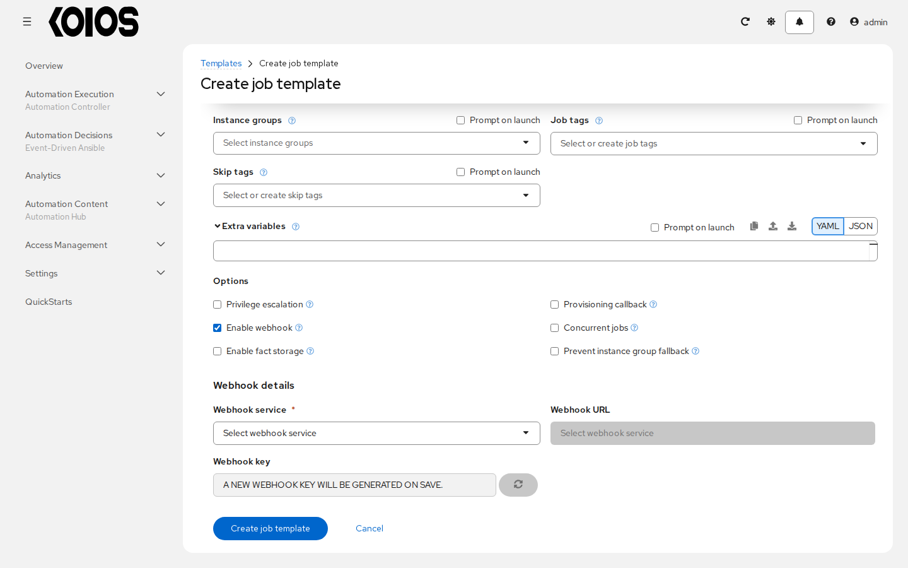
Webhook service: Select which service to listen for webhooks from: GitHub, GitLab or Bitbucket Data Center.
Webhook URL: Automatically populated with the URL for the webhook service to POST requests to.
Webhook key: The shared secret used by the webhook service to sign payloads sent to automation controller. A new key is generated when the template is saved, and you can regenerate it with the button next to the field. Configure it in the webhook settings of the service so that automation controller accepts its webhooks.
Webhook credential: A token credential used to send status updates to the webhook service. For supported providers and configuration, see Working with Webhooks; the credential types and their fields are documented in Credential Types.
For additional information on setting up webhooks, see Working with Webhooks.
When you have completed configuring the details of the job template, click Create job template.
The template opens in its Details tab, with Launch template and Edit template at the top and the Team Access, User Access, Schedules, Jobs, Survey and, when your permissions allow it, Notifications tabs.
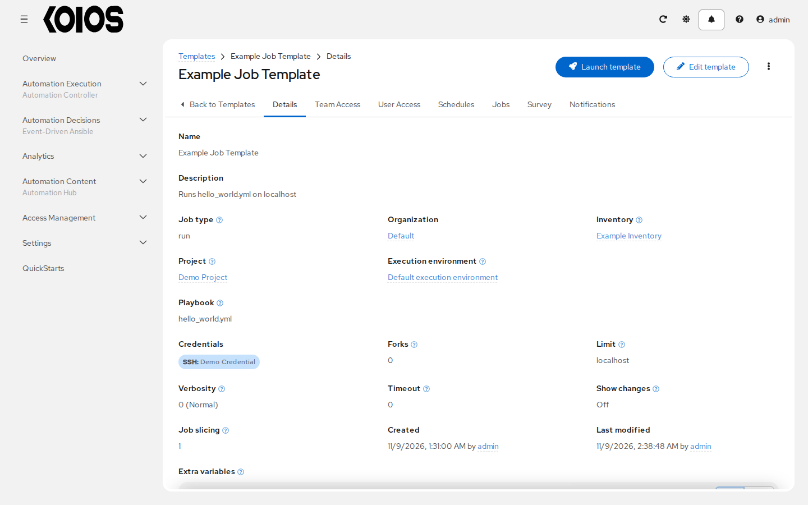
19.2. Add Permissions
The User Access and Team Access tabs list the users and teams with roles on the job template; Assign users and Assign teams give roles to more of them, such as JobTemplate Execute to launch it. Users must exist first; see Users.
19.3. Work with Notifications
The Notifications tab lists the notifiers you can use with the job template.
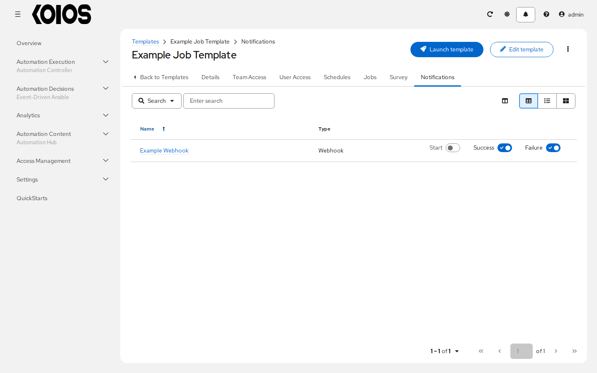
Use the Start, Success and Failure toggles to enable or disable each notifier for the jobs of this template. For more detail, see Enable and Disable Notifications.
If no notifiers have been set up, create them in Automation Execution > Administration > Notifiers. Refer to Notification Types for additional details on configuring various notification types and extended messaging.
19.4. View Completed Jobs
The Jobs tab lists the jobs launched from the job template, with their status and when they started and finished. Expand a row to see more details, such as who launched the job and with which inventory, project and credentials; click a job to open its output. You can filter the list using any of these criteria. The row actions relaunch a job.
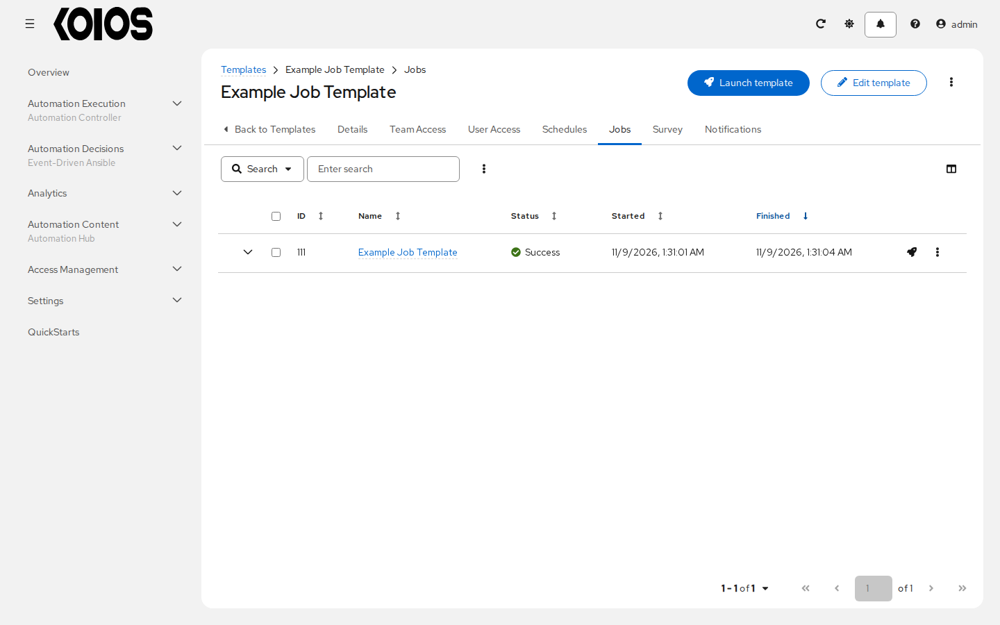
Sliced jobs are shown as a workflow job with the number of slices that ran; see Job Slicing.
19.5. Scheduling
Access the schedules for a particular job template from the Schedules tab.
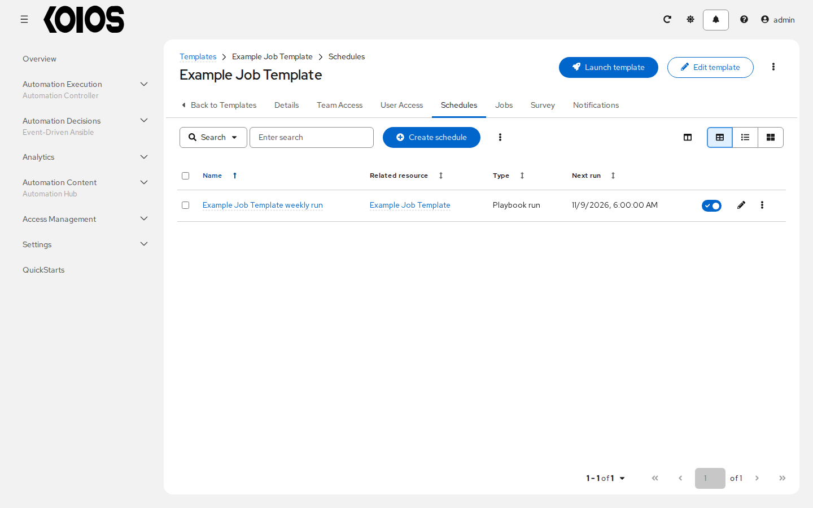
19.5.1. Schedule a Job Template
To schedule a job template run, click Create schedule in the Schedules tab. Existing schedules can be edited, enabled or disabled from the same tab. Refer to Schedules for more information.
If the job template prompts for values on launch, the schedule asks for them too. If Prompt on launch was selected for the Credentials field, you cannot remove the default machine credential of the schedule without replacing it with another machine credential. If the job template has a survey with required questions, the schedule must answer them.
Note
To be able to set extra_vars on schedules, you must select Prompt on launch for Extra variables on the job template, or configure and enable a survey on the job template, then those answered survey questions become extra_vars.
19.6. Surveys
Job types of Run or Check will provide a way to set up surveys in the job template. Surveys set extra variables for the playbook similar to ‘Prompt for Extra Variables’ does, but in a user-friendly question and answer way. Surveys also allow for validation of user input. Click the Survey tab to create a survey.
Use cases for surveys are numerous. An example might be if operations wanted to give developers a “push to stage” button they could run without advanced Ansible knowledge. When launched, this task could prompt for answers to questions such as, “What tag should we release?”
Many types of questions can be asked, including multiple-choice questions.
19.6.1. Create a Survey
To create a survey:
In the Survey tab, click Create survey question.
A survey can consist of any number of questions. For each question, enter the following information:
Question: The question to ask the user
Description: (optional) A description of what’s being asked of the user.
Answer variable name: The Ansible variable name to store the user’s response in. This is the variable to be used by the playbook. Variable names cannot contain spaces.
Answer type: Choose from the following question types.
Text: A single line of text. You can set the minimum and maximum length (in characters) for this answer.
Textarea: A multi-line text field. You can set the minimum and maximum length (in characters) for this answer.
Password: Responses are treated as sensitive information, much like an actual password is treated. You can set the minimum and maximum length (in characters) for this answer.
Multiple Choice (single select): A list of options, of which only one can be selected at a time. Enter the options in the form.
Multiple Choice (multiple select): A list of options, any number of which can be selected at a time. Enter the options in the form.
Integer: An integer number. You can set the minimum and maximum value for this answer.
Float: A decimal number. You can set the minimum and maximum value for this answer.
Required: Whether or not an answer to this question is required from the user.
Minimum length and Maximum length (Minimum and Maximum for numbers): Specify if a certain length or value of the answer is required.
Default answer: The default answer to the question. This value is pre-filled in the interface and is used if the answer is not provided by the user.
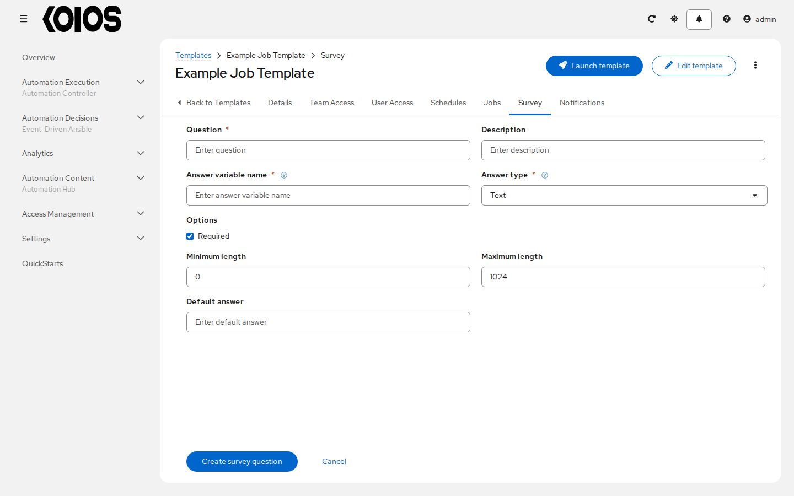
Once you have entered the question information, click Create survey question.
The question displays in the Survey tab. For any question, you can click the pencil icon to edit it, or select questions and use Delete survey questions in the toolbar menu. Use the Survey enabled switch to enable or disable the survey.
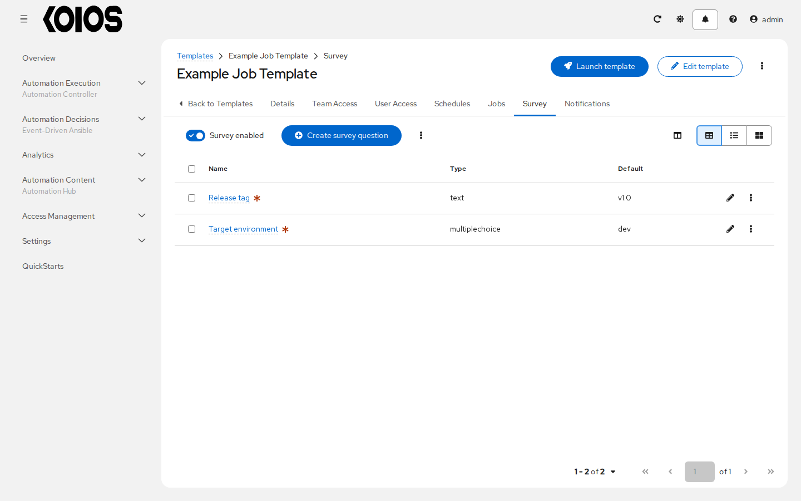
If you have more than one survey question, use Manage question order in the toolbar menu to rearrange the questions by dragging them, and click Apply.
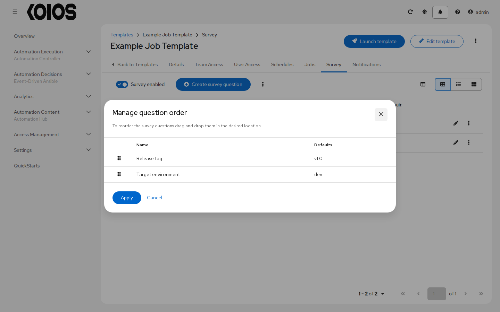
To add more questions, click Create survey question again.
19.6.2. Optional Survey Questions
The Required setting on a survey question determines whether the answer is optional or not for the user interacting with it.
Behind the scenes, optional survey variables can be passed to the playbook in extra_vars, even when they aren’t filled in.
If a non-text variable (input type) is marked as optional, and is not filled in, no survey
extra_varis passed to the playbook.If a text input or text area input is marked as optional, is not filled in, and has a minimum
length > 0, no surveyextra_varis passed to the playbook.If a text input or text area input is marked as optional, is not filled in, and has a minimum
length === 0, that surveyextra_varis passed to the playbook, with the value set to an empty string ( “” ).
19.7. Launch a Job Template
A major benefit of automation controller is the push-button deployment of Ansible playbooks. You can easily configure a template to store all parameters you would normally pass to the ansible-playbook on the command line–not just the playbooks, but the inventory, credentials, extra variables, and all options and settings you can specify on the command line.
Easier deployments drive consistency, by running your playbooks the same way each time, and allow you to delegate responsibilities–even users who aren’t Ansible experts can run playbooks written by others.
Launch a job template by any of the following ways:
In the Templates list, click Launch template (rocket icon) in the row of the template.
In the job template, click Launch template.
A job may require additional information to run. The launch wizard then asks for it in these steps, as needed:
Prompts: the fields with Prompt on launch selected
Credential Passwords: passwords or passphrases of the credentials that have been set to ask at launch
Survey: the questions of the survey, if one is enabled
Review: a summary of the values, before you click Finish to launch the job
Note
If a job has user-provided values, then those are respected upon relaunch. If the user did not specify a value, then the job uses the default value from the job template. Jobs are not relaunched as-is. They are relaunched with the user prompts re-applied to the job template.
Below is an example job launch that prompts for job tags, and runs the example survey created in Surveys.
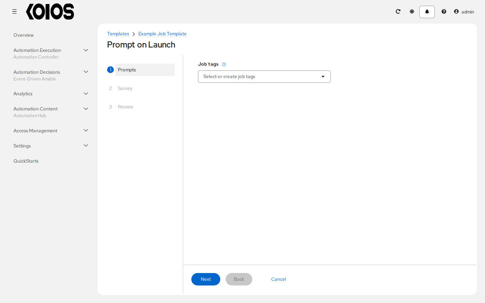
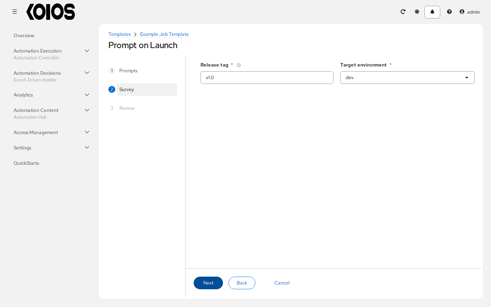
Along with any extra variables set in the job template and survey, automation controller automatically adds the following variables to the job environment. These variables are defined by the system and cannot be overridden; variables about the job context, like tower_job_template_name, are not affected if they are set in extra_vars.
tower_job_id: The Job ID for this job runtower_job_launch_type: The description to indicate how the job was started:manual: Job was started manually by a user.
relaunch: Job was started via relaunch.
callback: Job was started via host callback.
scheduled: Job was started from a schedule.
dependency: Job was started as a dependency of another job.
workflow: Job was started from a workflow job.
webhook: Job was started from a webhook event.
sync: Job was started from a project sync.
scm: Job was created as an Inventory SCM sync (deprecated).
tower_job_template_id: The Job Template ID that this job run usestower_job_template_name: The Job Template name that this job usestower_execution_node: The Execution Node name that launched this jobtower_project_revision: The current revision of the project the job template uses (scm_revisionof the project). When the job overrides the branch, the revision of the job itself can differ; it is in the job’s fieldscm_revision.tower_project_scm_branch: The configured default branch of the project the job template usestower_job_scm_branch: If the branch is overridden by the job, the value is shown heretower_user_email: The user email of the automation controller user that started this job. This is not available for callback or scheduled jobs.tower_user_first_name: The user’s first name of the automation controller user that started this job. This is not available for callback or scheduled jobs.tower_user_id: The user ID of the automation controller user that started this job. This is not available for callback or scheduled jobs.tower_user_last_name: The user’s last name of the automation controller user that started this job. This is not available for callback or scheduled jobs.tower_user_name: The user name of the automation controller user that started this job. This is not available for callback or scheduled jobs.tower_schedule_id: If applicable, the ID of the schedule that launched this jobtower_schedule_name: If applicable, the name of the schedule that launched this jobtower_workflow_job_id: If applicable, the ID of the workflow job that launched this jobtower_workflow_job_name: If applicable, the name of the workflow job that launched this job. Note this is also the same as the workflow job template.tower_workflow_job_launch_type: If applicable, how the workflow job that launched this job was startedtower_parent_job_schedule_idandtower_parent_job_schedule_name: If applicable, the schedule that launched the parent workflow jobtower_inventory_id: If applicable, the ID of the inventory this job usestower_inventory_name: If applicable, the name of the inventory this job uses
Each variable is also defined with the deprecated awx_ prefix (for example, awx_job_id) while the Include Deprecated AWX Variable Prefix setting, in Settings > Automation Execution > Job, is enabled (the default). Prefer the tower_ names.
Upon launch, automation controller automatically opens the output of the new job.
Note
You can relaunch a job from the job list to re-run it on all hosts or just failed hosts in the specified inventory. Refer to Jobs for more detail.
When slice jobs are running, job lists display the workflow and job slices, as well as a link to view their details individually; see Job Slicing.
Note
You may launch jobs in bulk using the endpoint /api/controller/v2/bulk/job_launch/ of the API. This endpoint accepts JSON and you can specify a list of unified job templates (such as job templates, project updates, etc) to launch. The user must have the appropriate permission to launch all the jobs. Either all jobs are launched, or an error is returned indicating why the operation was not able to complete. Use the OPTIONS request to return relevant schema.
19.8. Copy a Job Template
If you choose to copy Job Template, it does not copy any associated schedule, notifications, or permissions. Schedules and notifications must be recreated by the user or admin creating the copy of the Job Template. The user copying the Job Template will be granted the admin permission, but no permissions are assigned (copied) to the Job Template.
In the Templates list, open the row menu of the template you want to copy and click Duplicate template.
The new template, named after the original one with a timestamp, displays in the list of templates.
Click the new template and click Edit template.
Replace the contents of the Name field with a new name, and provide or modify the entries in the other fields to complete this page.
Click Save job template when done.
19.8.1. Gathering Facts
Automation controller does not ship special scan playbooks or modules: to collect information about hosts, run a playbook that gathers facts with the standard modules and enable Enable fact storage on its job template, so that the facts are stored for each host (see Fact Caching). For example:
- hosts: all
gather_facts: true
tasks:
- name: Gather the installed packages
ansible.builtin.package_facts:
- name: Gather the services
ansible.builtin.service_facts:
The stored facts appear in the Facts tab of each host and can be used, for example, in smart and constructed inventories (see Inventories). Gathering package and service facts usually needs Privilege escalation and credentials for which become is possible.
For a custom fact module, place it in the library/ directory of the project and call it from the playbook; it must return its data under ansible_facts. Refer to the Creating an info or a facts module section of the Ansible documentation for more information.
19.9. Fact Caching
Automation controller can store and retrieve facts on a per-host basis through an Ansible Fact Cache plugin. This behavior is configurable on a per-job template basis. Fact caching is turned off by default but can be enabled to serve fact requests for all hosts in an inventory related to the job running. This allows you to use job templates with --limit while still having access to the entire inventory of host facts. A global timeout that the plugin enforces per host can be specified (in seconds) with Per-Host Ansible Fact Cache Timeout in Settings > Automation Execution > Job:
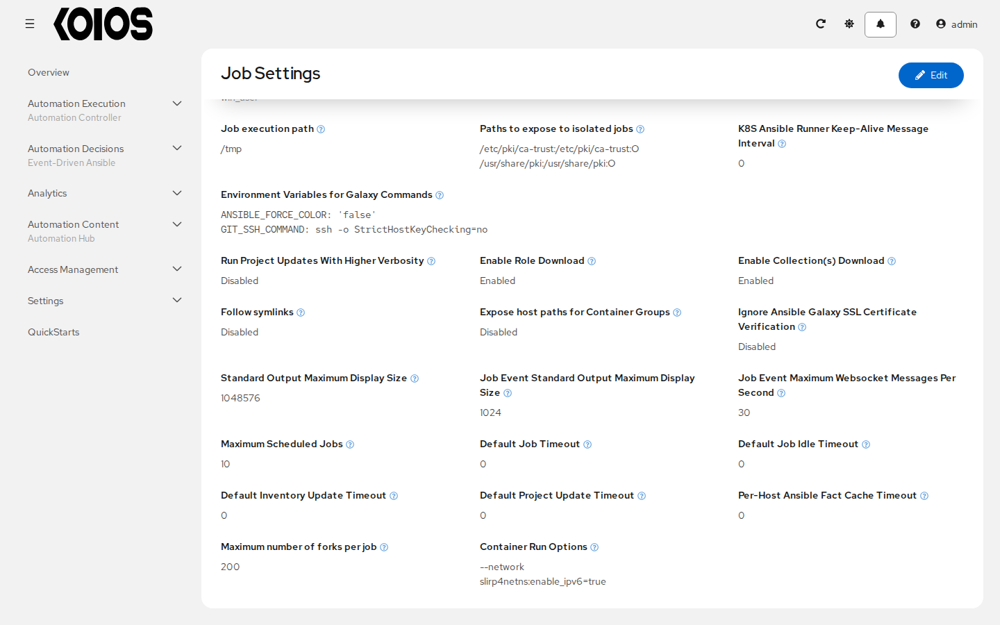
Upon launching a job that uses fact cache (use_fact_cache=True), automation controller will store all ansible_facts associated with each host in the inventory associated with the job. The Ansible Fact Cache plugin that ships with automation controller will only be enabled on jobs with fact cache enabled (use_fact_cache=True).
When a job that has fact cache enabled (use_fact_cache=True) finishes running, automation controller will restore all records for the hosts in the inventory. Any records with update times newer than the currently stored facts per-host will be updated in the database.
New and changed facts will be logged via automation controller’s logging facility. Specifically, to the system_tracking namespace or logger. The logging payload will include the fields:
host_name
inventory_id
ansible_facts
where ansible_facts is a dictionary of all Ansible facts for host_name in the automation controller inventory, inventory_id.
Note
If a hostname includes a forward slash (/), fact cache will not work for that host. If you have an inventory with 100 hosts and one host has a / in the name, 99 of those hosts will still collect facts.
19.9.1. Benefits of Fact Caching
Fact caching saves a significant amount of time over running fact gathering. If you have a playbook in a job that runs against a thousand hosts and forks, you could easily spend 10 minutes gathering facts across all of those hosts. But if you run a job on a regular basis, the first run of it caches these facts and the next run will just pull them from the database. This cuts the runtime of jobs against large inventories, including Smart Inventories, by an enormous magnitude.
Note
Do not modify the ansible.cfg file to apply fact caching. Custom fact caching could conflict with automation controller’s fact caching feature. It is recommended to use the fact caching module that comes with automation controller.
You can choose to use cached facts in your job by enabling Enable fact storage in the Options of the job template.
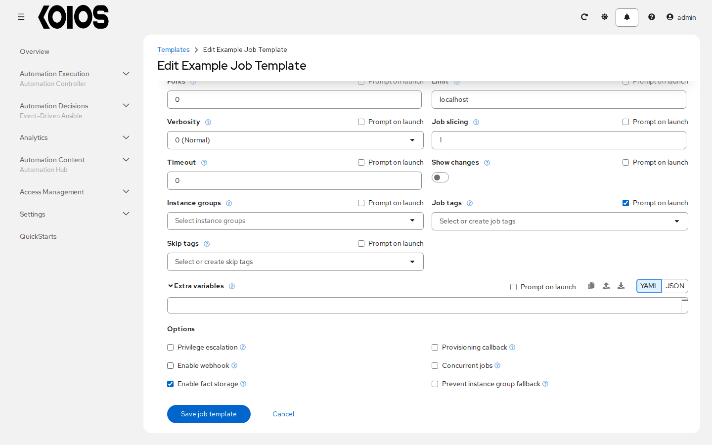
To clear facts, you need to run the Ansible clear_facts meta task. Below is an example playbook that uses the Ansible clear_facts meta task.
- hosts: all
gather_facts: false
tasks:
- name: Clear gathered facts from all currently targeted hosts
meta: clear_facts
You can find the API endpoint for fact caching at:
https://<koios host>/api/controller/v2/hosts/<id>/ansible_facts/
19.10. Utilizing Cloud Credentials
Credentials for cloud and other external services can be associated with a job template. Their injectors supply values to the playbook through environment variables, files or extra variables, depending on the type. See Credential Types for the available types and fields, and Secret Management System for linking inputs to an external secret source.
Meanwhile, a custom credential type can inject the values that the modules of a service expect, for example the AWS_ACCESS_KEY_ID and AWS_SECRET_ACCESS_KEY environment variables, which all the AWS modules read without setting their key options. See Custom Credential Types. The playbooks should use these values through the modules and never print them.
19.11. Provisioning Callbacks
Provisioning callbacks are a feature of automation controller that allow a host to initiate a playbook run against itself, rather than waiting for a user to launch a job to manage the host from the user interface. Please note that provisioning callbacks are only used to run playbooks on the calling host. Provisioning callbacks are meant for cloud bursting (i.e. new instances with a need for client to server communication for configuration (such as transmitting an authorization key)), not to run a job against another host. This provides for automatically configuring a system after it has been provisioned by another system (such as AWS auto-scaling, or a OS provisioning system like kickstart or preseed) or for launching a job programmatically without invoking the automation controller API directly. The Job Template launched only runs against the host requesting the provisioning.
Frequently this would be accessed via a firstboot type script, or from cron.
To enable callbacks, check Provisioning callback in the Options of the job template and enter a Host config key. Once the template is saved, its details show the Provisioning callback URL.
Note
If you intend to use automation controller’s provisioning callback feature with a dynamic inventory, Update on launch should be set for the inventory source of the inventory used in the job template.
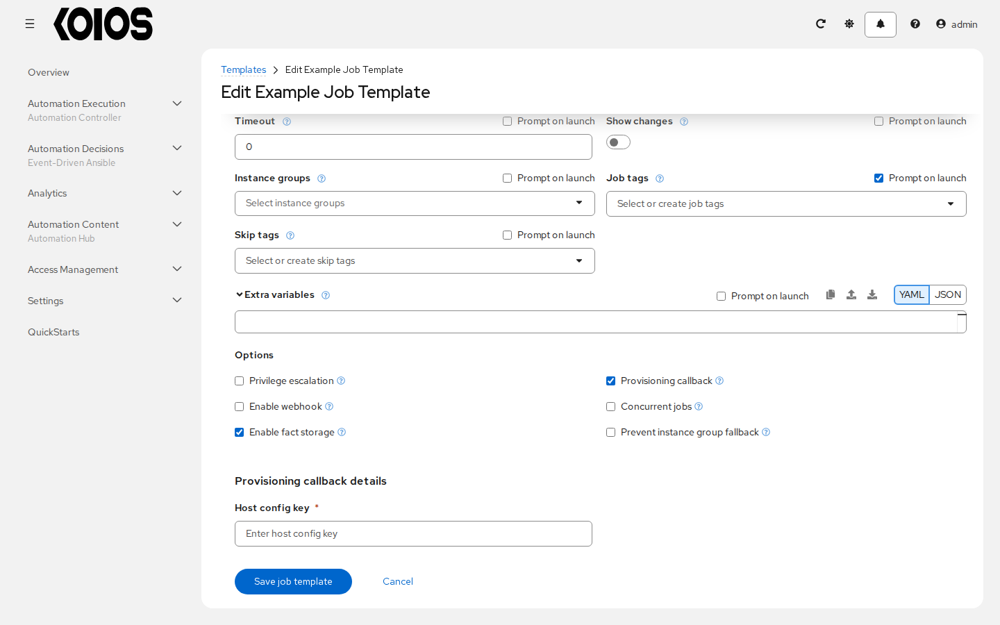
The Host config key ensures that foreign hosts with the URL cannot request configuration. Please provide a custom value for Host config key. The host key may be reused across multiple hosts to apply this job template against multiple hosts. Should you wish to control what hosts are able to request configuration, the key may be changed at any time.
To callback manually via REST, look at the callback URL in the UI, which is of the form:
https://<KOIOS_HOST>/api/controller/v2/job_templates/7/callback/
The ‘7’ in this sample URL is the job template ID in automation controller.
The request from the host must be a POST. Here is an example using curl (all on a single line):
curl -k -f -i -H 'Content-Type:application/json' -XPOST -d '{"host_config_key": "redhat"}' \
https://<KOIOS_HOST>/api/controller/v2/job_templates/7/callback/
The requesting host must be defined in your inventory for the callback to succeed. If automation controller fails to locate the host either by name or IP address in one of your defined inventories, the request is denied. When running a Job Template in this way, the host initiating the playbook run against itself must be in the inventory. If the host is missing from the inventory, the request fails with a No matching host could be found! error message.
Note
If your host is not in inventory and Update on launch is set for the inventory source, automation controller attempts to update the inventory source before running the callback.
Automation controller identifies the calling host from the address of the request. It collects every address found in the headers listed in the Remote Host Headers setting, adds their reverse DNS names, and compares the results against each host’s ansible_host value (or host name) in the job template’s inventory. The job runs only if exactly one host matches. If no host matches, the request fails with No matching host could be found!, and if more than one host matches, it fails with Multiple hosts matched the request!.
When automation controller runs on Kubernetes, it sits behind an ingress controller, so the default Remote Host Headers setting identifies every callback as coming from the ingress rather than from the calling host. To use provisioning callbacks, configure automation controller to read the client address from X-Forwarded-For and make sure your ingress passes the real client address. See Proxy Support for details, including the configuration needed on K3s.
Warning
Do not include ingress controller or Kubernetes node addresses in an inventory used for provisioning callbacks. Depending on your configuration, automation controller can see the ingress address alongside the calling host’s address and run the job against the ingress host instead.
Successful requests result in a new job, where the results and history can be viewed.
Instead of a simple curl request, you can use the example scripts of AWX, tools/scripts/request_tower_configuration.sh (Linux/UNIX) and tools/scripts/request_tower_configuration.ps1 (Windows), from the AWX repository. They are not installed in the platform: copy them to the hosts. They call /api/v2/job_templates/<id>/callback/, which the platform gateway does not serve; change that path to /api/controller/v2/job_templates/<id>/callback/ in the script. Usage is described in the source code of the file by passing the -h flag, as shown below:
./request_tower_configuration.sh -h
Usage: ./request_tower_configuration.sh <options>
Request server configuration from Ansible Tower.
OPTIONS:
-h Show this message
-s Tower server (e.g. https://tower.example.com) (required)
-k Allow insecure SSL connections and transfers
-c Host config key (required)
-t Job template ID (required)
-e Extra variables
This script has some intelligence, it knows how to retry commands and is therefore a more robust way to use callbacks than a simple curl request. As written, the script retries once per minute for up to ten minutes.
Note
Please note that this is an example script. You should edit this script if you need more dynamic behavior when detecting failure scenarios, as any non-200 error code may not be a transient error requiring retry.
Most likely you will use callbacks with dynamic inventory in automation controller, such as pulling cloud inventory from one of the supported cloud providers. In these cases, along with setting Update on launch, be sure to configure a cache timeout for the inventory source, to avoid hammering of your Cloud’s API endpoints. Since the script polls once per minute for up to ten minutes, a suggested cache invalidation time for inventory (configured on the inventory source itself) would be one or two minutes.
While we recommend against running the script from a cron job, a suggested cron interval would be perhaps every 30 minutes. Repeated configuration can be easily handled by scheduling in automation controller, so the primary use of callbacks by most users is to enable a base image that is bootstrapped into the latest configuration upon coming online. To do so, running at first boot is a better practice. First boot scripts are just simple init scripts that typically self-delete, so you would set up an init script that called a copy of the script and make that into an autoscaling image.
19.11.1. Passing Extra Variables to Provisioning Callbacks
Just as you can pass extra_vars in a regular Job Template, you can also pass them to provisioning callbacks, provided that the job template has Prompt on launch selected for Extra variables; otherwise the callback ignores them, even with a survey. To pass extra_vars, the data sent must be part of the body of the POST request as application/json (as the content type). Use the following JSON format as an example when adding your own extra_vars to be passed:
'{"extra_vars": {"variable1":"value1","variable2":"value2",...}}'
You can also pass extra variables to the Job Template call using curl, such as is shown in the following example:
$ curl -f -H 'Content-Type: application/json' -XPOST \
-d '{"host_config_key": "redhat", "extra_vars": {"foo": "bar"}}' \
https://<KOIOS_HOST>/api/controller/v2/job_templates/7/callback/
For more information, refer to Launching Jobs with Curl.
19.12. Extra Variables
Note
extra_vars passed to the job launch API are only honored if one of the following is true:
They correspond to variables in an enabled survey
ask_variables_on_launchis set to True
When you pass survey variables, they are passed as extra variables (extra_vars) within automation controller. This can be tricky, as passing extra variables to a job template (as you would do with a survey) can override other variables being passed from the inventory and project.
By default, extra_vars are marked as !unsafe unless you specify them on the job template’s Extra variables field. These are trusted, because they can only be added by users with enough privileges to add or edit a Job Template. For example, nested variables do not expand when entered as a prompt, as the Jinja brackets are treated as a string. For more information about unsafe variables, see unsafe or raw strings.
For example, say that you have a defined variable for an inventory for debug = true. It is entirely possible that this variable, debug = true, can be overridden in a job template survey, because extra_vars have the highest precedence over inventory, group and host variables.
Within extra_vars, the values given at launch (prompted extra variables and survey answers) override the defaults of the job template and of the survey. A survey question therefore does not protect a variable: to keep a value fixed, define it only in the template’s Extra variables and do not prompt for it nor ask for it in the survey.
If specifying the ALLOW_JINJA_IN_EXTRA_VARS parameter, refer to the automation controller Tips and Tricks section of the Administration Guide to configure it in the Jobs Settings screen of the user interface.
Note
The Job Template extra variables dictionary is merged with the Survey variables.
Here are some simplified examples of extra_vars in YAML and JSON formats:
The configuration in YAML format:
launch_to_orbit: true
satellites:
- sputnik
- explorer
- satcom
The configuration in JSON format:
{
"launch_to_orbit": true,
"satellites": ["sputnik", "explorer", "satcom"]
}
Ansible applies its own variable precedence inside each job. The variables that automation controller supplies enter it at these levels:
Automation controller |
Ansible precedence level |
|---|---|
Inventory variables |
inventory variables of the |
Group variables |
inventory |
Host variables (including those imported by inventory sources) |
inventory |
|
the same levels as in any Ansible run |
Extra variables of the job (see below) |
extra variables, which always win |
Interactive prompts of plays (vars_prompt) are not supported, because jobs run without a terminal; use a survey instead.
The extra variables of a job are combined in this order, where later ones override earlier ones with the same name:
the Extra variables of the job template;
the answers of its survey, when the survey is enabled, including the default values of the questions that are not answered;
the extra variables given at launch, when the template prompts for them.
19.12.1. Relaunching Job Templates
A relaunched job has launch_type set to relaunch. Jobs are not relaunched as-is: when the job template still exists and the job saved the values given at launch (prompts and survey answers), the relaunch creates a new job from the current job template and re-applies those values to it. The fields that were not prompted, including the template’s own Extra variables, come from the job template as it is now.
For example, say that you launch a job template with no extra_vars, which results in the creation of a job called j1. Next, say that you edit the job template and add some extra_vars (such as hello: world). Relaunching j1 creates j2, which uses the current job template, so j2 has hello: world. If j1 had been launched with prompted extra_vars, j2 would also get those values, re-applied on top of the template.
Only when the job template no longer exists, or the job has no saved launch values, does the relaunch copy the fields of the original job.